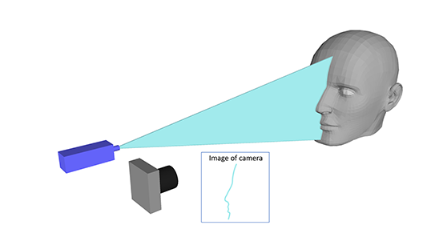

Structured-light sensing
Active dpth sensing through the way projected pattern bends
Principle of Structured-light sensing
Structured-light sensing technology is an active high-accuracy shor-range depth sensing technology. The system of structured-light sensing is usually composed of two parts: a projector to project a designed pattern and a camera to receive the pattern reflected by the detected target. The sensor has been installed on mobile phones to realize face identidfication, such as IPhone and Huawei Mate 20 Pro (shown in Figure below ).
Figure 1. The solution of Face ID of three companies (from left to right) (a)Huawei (b) Xiaomi (c) Apple
Fig. 1 shows the case of structured-light sensor adopted by Huawei, Xiaomi and Apple respectively. It is obvious that there are still
many other elements but the key elements are dot projector and infrared camera. Even though they applied dot pattern to realize
3D sening, patterns with other shape could also be used to obtain the same result. In the following introducation, line pattern will
be taken for an example to explain the principle of structured-light sening, which could also be seen as a group of dots.

Figure 2. The shemtic of structured light sening (from left to right) (a)system (b) geometry
As we seen from the above figure, if a line-shaped pattern is projected to a spherical surface, the pattern received by camera will
bend on account of the surface. It is easily imaged that the surfaces with different shape lead to different distortion of line pattern.
The reason why the line bend is that the patterns reflected by objects placed at different distance away from camera are received at
different position of CMOS/CCD as illustrated in the right figure in Fig. 2. That is to say, if the surface of object is absolutely flat, we
could not see such kind of bending. Thus, through triangle calulation shown in Fig. 2.(b), the depth information could be obtained
through the following equation:
Elements in structured-light sensor
After introduction of principle of structured-light sensing, I have to give a breif introduction of the elements used in structured-light
sening (shown in Fig. 3.). Firstly, let’s have a look at projector. The pattern projected by projector is actually light beam, which is always
realized by laser with optics thanks to its small size, small powerconsumption, and high integratablity. Among the current lasers , such
as DFB lasers, laser diode, laser-emitting diode, vertical-cavity surface-emitting laser is most widely used in indusrty because of its low
threshold current, low cost, extrmely high integratability. For IPhone, Apple has its own solution including algorithm and hardware
design, where the VCSEL is supplied by lumentum, and DOE (optics cooperated with VCSEL to generate designed dot pattern) is supplid
by tsmc and Himax. However, for most Chinese company such as Xiaomi and oppo, they don’t have their own solution, which means
they must adopt the solution designed by Qualcomm/Himax. Differed from Apple, Qualcomm/Himax uses edge-emmitting laser as the
light source of projector, because the 6-inch incision based VCSEL technology is controlled by Apple and its supplier lumentum. However
in the future, when most companies could get command of such technology of volume production to meet the requirment of market,
the VCSEL should be still the preferred light source for structured-light projector. It is said that Huawei’ s structured-light sensor is
designed by itself, but the supplier of VCSEL and optics have to be purchased from overseas companies. There are also some Chinese
companies such as Bright intelligent and Accelink engaged in desiging and producing VCSELs, but there is stll far from being used in
practical.
Figure 3. The elements used in Face ID system
Besides, camera is also essential for detection. To increase the resolution and accuracy, it have to adopt high-sensitivity milimeter
-scale CMOS sensor with large numbers of pixels and equipped with a micro lens. For IPhoneX, a NIR camera sensor based on an
Imager-SOI substrate provided by STMicroelectronics was adopted. It could provide a small pixel size with 4um (High resolution).
The proximity sensor (may be a ToF sensor) composed of single-photon avalanche diode (SPAD) technology and a VCSEL illuminator
(Flooded illuminator) was also supplied by the same company. It could be seen from Fig. 1.(c). that there are some other elements
like ambient light sensor, the function of which is not clear explained by researchers, but I think it might be used to suppress the
effect of backgroud light.